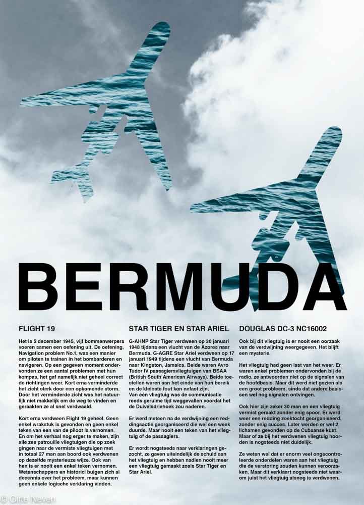
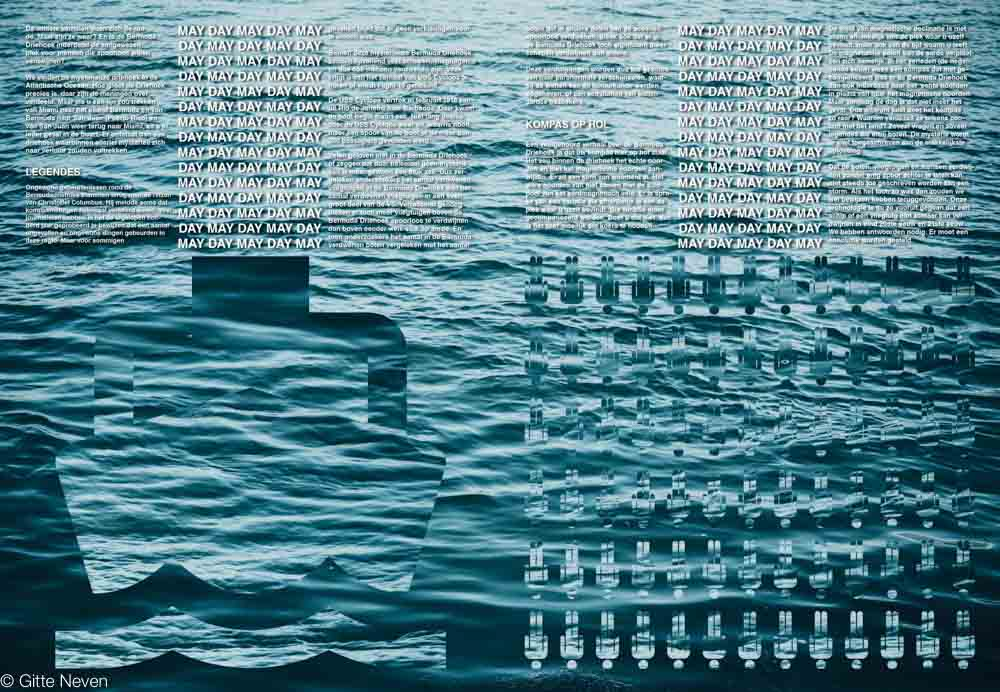
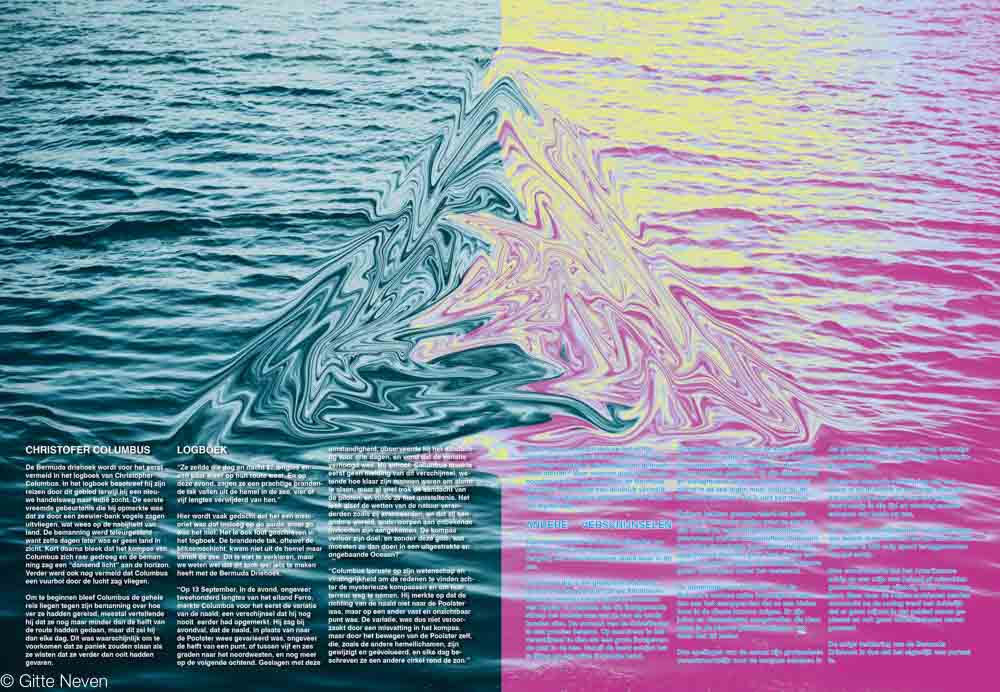
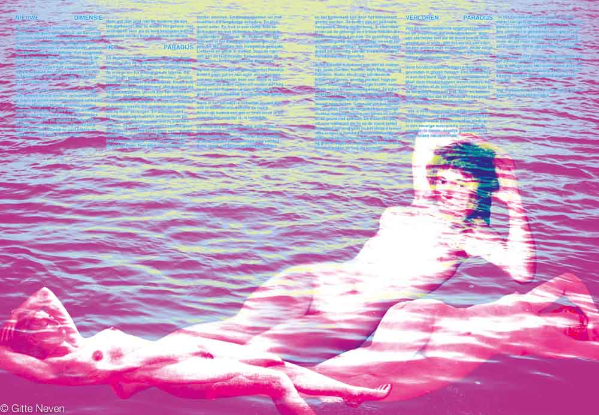
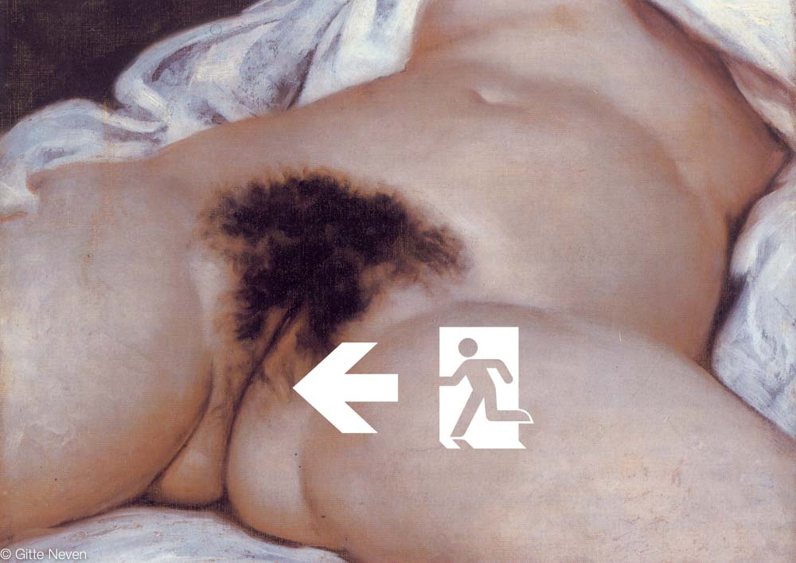

A paper about a mystery. I choose the mystery of the Bermuda Triangle. My idea surrounding this subject is that the people who went missing there were sucked in a black hole but didn't die. They come to a fantasy world much like heaven. It is so nice there that all the people want to stay there. You see this in my design by the difference of colour. The beginning is taut and had lots of pictograms to give it neutrality. And in the middle it changes to the more fantasy like world. The sea is turned pink and there are images of women that makes it a bit erotic.
   We had to add a poster that was put in the middle of the paper. I took the painting l'Origine du Monde by Gustave Courbet and added an exit sign. This was to strengthen my theory that the Bermuda Triangle actually was a vagina, because the vagina is often shown by a triangle. The exit sign displays the idea that mankind wants to go there even if there is an emergency.
